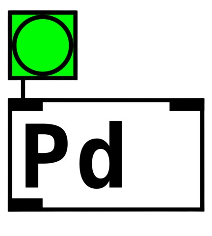
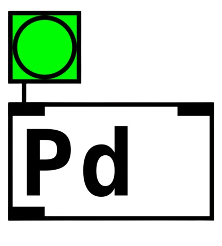

Dario Hernan Guaraz
[Full Stack Developer]
Buenos Aires, Argentina
Email: darioguaraz@gmail.com
Teléfono: +54 011 6790 7664
LinkedIn: linkedin.com/in/dario-hernan-guaraz/
GitHub: github.com/darioGuaraz
Buenos Aires, Argentina
Email: darioguaraz@gmail.com
Teléfono: +54 011 6790 7664
LinkedIn: linkedin.com/in/dario-hernan-guaraz/
GitHub: github.com/darioGuaraz
Técnico en Informática Personal y Profesional. Técnico Superior en Programación. Conocimientos en desarrollo de aplicaciones web (FullStack). Conocimientos básicos de desarrollo móvil (Android Studio, Java) y robótica (Arduino). Composición y producción musical. Certificación CCNAv1 CISCO Networking. AWS Cloud Practitioner. Habilidades en áreas creativas como diseño y desarrollo multimedia.
Instituto Nacional de Tecnología Agropecuaria (INTA) - Febrero de 2013
Instituto Nacional de Tecnología Agropecuaria (INTA) - Abril de 2021
- Técnico en Informática Personal y Profesional - ISCJ - 2009
- Técnico Superior en Programación - TECLAB - 2024
- CISCO CCNAv1 - Cisco - 2021
- Introduction to Cybersecurity - Cisco - 2021
- Base de Datos PostgreSQL Server - Udemy - 2022


 



Fadani representa un avance significativo en la tecnología de entretenimiento doméstico, ofreciendo una solución de Ambilight accesible y eficiente. Con Fadani, estamos redefiniendo la experiencia audiovisual en el hogar y ansiosos por compartir sus innovaciones con el mundo. Ver Proyecto
Para mi tesis en la Tecnicatura en Programación, decidí realizar una plataforma online que consiste en un catálogo web de series y películas. Los criterios a su desarrollo fueron: que sea funcional, gratuito, sin logeos para hacerlo más sencillo para el usuario. Todo el material que allí se encuentra es de uso y licencia libre sin publicidad. Ver Proyecto
Con el fin de mejorar la calidad del servicio del área de soporte IT, se desarrolló un formulario en línea adaptativo y responsivo (Mobile first). En este, el usuario podrá, entre otras cosas, calificar la calidad y el tiempo de resolución/respuesta del técnico involucrado. Los datos ingresados en dicho formulario se almacenan en una base de datos relacional (SQL) en un equipo local. Esta base de datos puede consultarse mediante PowerBI, lo que permite realizar un análisis cualitativo y cuantitativo más detallado gracias al feedback del propio usuario/cliente. Aplicando este sistema en el proceso de calidad, se podrá medir y mejorar de forma continua el desempeño del área de soporte IT. Ver Proyecto
Prácticas de JavaScript vanilla aplicada a desarrollo de calculadora numérica UI responsive. Ver Proyecto